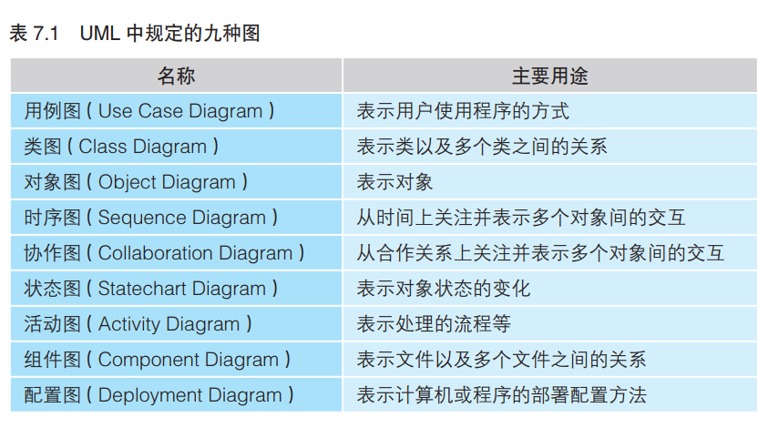

1、首先要划出一个“知识的范围”，精通一门学问必知必会的知识都在这个范围之内。其次是掌握该范围内每个知识点中“基础中的基础知识”。最后是能独当一面的“目标”，即掌握了这些知识可以做什么。
2、 下面就以学习音乐为例说明这三点。 首先， 划出的“知识范围” 是节奏、 旋律、 和弦这三个知识点。 所谓“基础中的基础知识”， 对于节奏来说就是四拍子（ 大、 大、大、 大）， 对于旋律来说就是 C 大调（ do re mi fa so la si do）， 对于和弦来说就是大三和弦（ do mi so）。 以四拍子为基础就能理解更加复杂的三拍子或五拍子； 以 C 大调为基础就能理解更加复杂的降 B 小调； 以大三和弦为基础就能理解更加复杂的减三和弦。 而最终的“目标” 就是能够自己作曲并演奏， 尽管这时仅能完成很简单的曲子。
3、
初级问题
硬件和软件的区别是什么？
硬件是看得见摸得着的设备，比如计算机主机、显示器、键盘等。而软件是计算机所执行的程序，即指令和数据。软件是看不见的。
中级问题
存储字符串“中国”需要几个字节？
在GBK字符编码下，存储“中国”需要4个字节。
在UTF-8编码下，一个汉字占用3个字节
高级问题
什么是编码（Code）？
通常将为了便于计算机处理而经过数字化处理的消息称为编码。
4、计算机的三大原则
计算机是执行输入、运算、输出的机器
程序是指令和数据的集合
计算机的处理方式有时与人们的思维习惯不同
5、无论是多么复杂的功能，都是通过组合一个又一个由输入、运算、输出构成的流程单位来实现的，这是毋庸置疑的事实。
如果打算用计算机做点什么的话，就要考虑该如何进行输入、如何获取输出以及进行怎样的运算才能从输入得到输出。
输入、运算、输出三者必须成套出现，缺一不可。
6、所谓指令，就是控制计算机进行输入、运算、输出的命令。把向计算机发出的指令一条条列出来，就得到了程序。
在程序设计中，会为一组指令赋予一个名字，可以称之为“函数”“语句”“方法”“子例程”“子程序”等。
7、数据分为两类：
一类是作为指令执行对象的输入数据
一类是从指令的执行结果得到的输出数据
数据的名字是 变量
8、编译就是把用C语言等编程语言编写的文件（源文件）转换成用机器语言（原生代码）编写的文件
9、对计算机来说什么都是数字。计算机终究只是受人支配的工具。
10、程序是指令和数据的集合。为了使互联网上相互连接的计算机能通过程序协同工作，微软公司采用了SOAP以及XML规范。SOAP是关于调用指令的规范，XML则是定义数据格式的规范。
只要定义出了指令和数据的规范，装有符合规范的程序的计算机自然就可以相互协作了。所谓计算机的协同工作指的是，输入到一台计算机中的数据，可以通过互联网传送到与这台计算机相连的其他计算机上执行运算，运算所输出的结果再返回给这台计算机。像这样部署在其他计算机上能执行某种运算的程序就叫做XML Web服务。
11、面向组件编程的方法是通过将组件（程序的零件）组装到一起完成程序；
面向对象编程的方法是先如实地对现实世界的业务建模，之后再把模型搬到程序中。333
使用符合人类思维习惯的编程方法，可以实现高效率的开发。
12、
初级问题
CPU 是什么的缩写？
CPU是Central Processing Unit（中央处理器）的缩写
中级问题
Hz 是表示什么的单位？
频率的单位。通常用Hz来表示驱动CPU运转的时钟信号的频率。1秒发出1次时钟信号就是1Hz，所以100MHz的话就是100x100万=1亿次/秒。M（兆）代表100万
高级问题
Z80CPU 是多少比特的 CPU ？
是8比特。CPU上数据总线的条数，或者CPU内部参与运算的寄存器的容量，都可以作为衡量CPU性能的比特数。
13、制作微型计算机所需的基础元件只有3个，CPU、内存和I/O，每种元件都是作为一块独立的IC在市场上出售的。CPU是计算机的大脑，负责解释、执行程序。内存负责存储程序和数据。I/O是Input/Output（输入/输出）的缩写，负责将计算机和外部设备（周边设备）连接在一起。
14、时钟发生器：每隔一定时间就变换一次电压的高低。时钟发生器中带有晶振，根据自身的频率（振动的次数）产生时钟信号。时钟信号的频率可以衡量CPU的运转速度。
15、
初级问题
什么是机器语言？
由二进制数字构成的程序，CPU可以直接对其解释、执行。
中级问题
通常把标识内存或 I/O 中存储单元的数字称作什么？
标识内存或I/O中存储单元的数字叫做“地址”
高级问题
CPU 中的标志寄存器（Flags Register）有什么作用？
用于在运算指令执行后，存储运算结果的某些状态。
16、
初级问题
Flow Chart 的中文意思是什么？
流程图、作业图、生产过程图解
中级问题
请说出自然界中河流的三种流动方式。
向着一个方向流淌；流着流着产生支流；卷成漩涡
高级问题
事件驱动是什么？
用户的操作等产生事件后，由事件决定程序的流程。
初级问题： 流程图（ Flow Chart） 是指用图的形式表示程序的流程。
中级问题： 与河流的流动方式一样， 程序的流程也分为三种。 在
程序中， 把犹如水流向着一个方向流淌的流程称作
“顺序执行” ； 把犹如水流流着流着产生了支流的流程
称作“条件分支” ； 把犹如水流卷成漩涡的流程称作
“循环”。
高级问题： Windows 应用程序的运行就是由事件驱动的。 例如，
选择“打开文件” 菜单项就能打开一个窗口， 在里面可
以指定要打开文件的名称和存储位置。 之所以能够这
样是因为一旦触发了“选中了菜单项” 这个事件， 程序
的流程就相应地流转到了处理打开窗口的那部分。
17、程序员一般都是先考虑程序的流程再开始编写程序的。只有编写过程序的人才能体会到“程序是流动着的”
18、顺序执行是按照指令记录在内存中的先后顺序依次执行的一种流程。
而循环则是在程序的特定范围内反复执行若干次的一种流程。
条件分支是根据若干个条件的成立与否，在程序的流程中产生若干个分支的一种流程。
19、画流程图来思考算法
算法：解决既定问题的步骤。
思考算法分两步走：
先从整体上考虑程序的粗略流程
再考虑程序各个部分细节的流程。
用户使用程序：
20、建议那些因为程序没有按照自己的想法来工作而烦恼的人，不妨试试从勾画反映程序整体流程的粗略流程图下手。只要在此之上慢慢地细化流程，就能得到详细的流程图。接下来再按照流程图所示的流程埋头编写程序就轻松了。
21、中断处理是指计算机使程序的流程突然跳转到程序中的特定地方，这样的地方称为中断处理历程（Routine）或者是中断处理程序（Handler），而这种跳转是通过CPU所具备的硬件功能实现的。
22、中断处理以从硬件发出的请求为条件，使程序的流程产生分支，因此可以说它是一种特殊的条件分支。可以，在诸位编写的程序中并不需要编写有关中断处理的代码。因为处理中断请求的程序，或是内置于被烧录在计算机ROM中的BIOS系统（Basic Input Output System）中，或是内置于Windows等操作系统中。
计算机具有硬件上处理中断的能力。
23、通常把用户在应用程序中点击鼠标或者敲击键盘这样的操作称作“事件”（Event）。负责检测事件的是Windows。Windows通过调用应用程序的WndProc()函数通知应用程序事件的发生。而应用程序则根据事件的类型做出相应的处理。这种机制就是事件驱动。可以说事件驱动也是一种特殊的条件分支。它以从Windows送来的通知为条件，根据通知的内容决定程序下一步的流程。
24、程序的流程还是只有顺序执行、条件分支和循环三种。
其中的顺序执行是最基本的程序流程，这是因为CPU中的PC寄存器的值会自动更新。条件分支和循环，在高级语言中用程序块表示，在机器语言和汇编语言中用跳转指令来表示，在硬件上是通过PC寄存器的值设为要跳转到的目的地的内存地址来实现。
25、“哨兵”指的是一种含有特殊值的数据，可用于标识数据的结尾等。
26、程序是用来在计算机上实现现实世界中的业务和娱乐活动的。
27、算法就是“把解决问题的步骤无一遗漏地用文字或图表示出来”。“步骤必须是明确的并且步骤数必须是有限的”。
计算机不靠直觉而是机械地解决问题。“机械的步骤”
了解并应用典型算法
辗转相除法
艾拉托斯特尼筛法（判定素数）
顺序查找
二分查找
哈希查找
冒泡排序
快速排序
利用计算机的处理速度
使用编程技巧提升程序执行速度
找出数字间的规律
先在纸上考虑算法
28、变量是数据的容器。变量中所存储的数据是可以改变的。变量的实质是按照变量所存储数据的大小被分配到的一块内存空间。
29、算法（处理问题的步骤），数据结构（作为处理对象的数据的排列方式）
30、OOP是Object Oriented Programming（面向对象编程）
31、

32、LAN是Local Area Network（局域网）。
TCP/IP是Transmission Control Protocol/Internet Protocol（传输控制协议/网际协议）
MAC地址就是能够标识网卡的编号
33、数字签名中使用的信息摘要是指从作为数字签名对象的文件整体中计算出的数值。
34、对比由文件整体计算出的信息摘要，可以证明文件的内容有没有被篡改。加密处理过的信息摘要就是数字签名。
35、XML是Extensible Markup Language（可扩展标记语言）。XML是用于定义任意标记语言的元语言。DOM（Document Object Model，文档对象模型）。
36、XML是一种通用的数据交换格式。